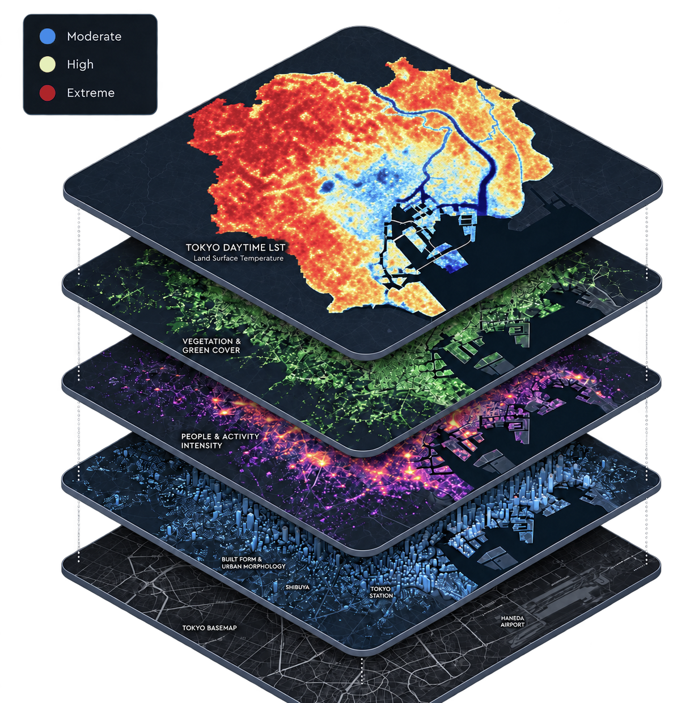
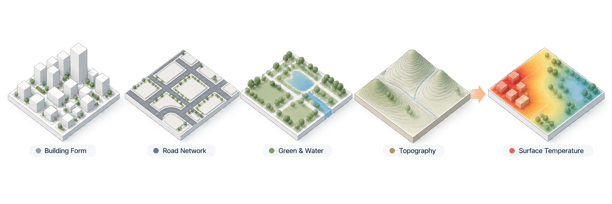

夏の暑さ対策の手引
Guide to Summer Heat Countermeasures
- 发布机构
- 东京都环境局
- 覆盖范围
- 东京 / 东京 23 区
- 主题
- 城市热岛、热适应、热舒适
TOKYO URBAN HEAT / SPATIAL AI
通过东京真实城市数据、空间分析与机器学习模型，探索、解释并模拟城市热环境。
真实空间数据 → 空间统计 → RF 模型 → 规划知识
EXPLORE / LAYERED CITY
从昼夜 LST 出发，逐层进入绿地与水体、城市形态和人口活动背景。每一层都可以作为 Agent 的真实空间分析输入。

FIVE CONNECTED CAPABILITIES
这是 HeatScope 的产品目录：自然语言会调用真实数据、空间工具、模型与官方知识，而不只是生成文字。
查看昼夜 LST、昼夜温差，以及 NDVI、水体、建筑形态与人口背景；也可直接比较区域。
DATA · LAYER · COMPARE查看说明 ↓02 / ANALYZE通过 Global Moran’s I 与 Local Moran’s I，识别显著高—高、低—低聚集及空间异常。
SPATIAL STATISTICS · LISA查看说明 ↓03 / EXPLAIN以 RF 模型和城市气候机制回答地点为何更热，并把模型解释连接到研究语境。
RANDOM FOREST · MECHANISM查看说明 ↓04 / PLAN调整绿地、建筑覆盖率、建筑高度或水体，比较规划情景，并得到有模型依据的建议。
SCENARIO · RECOMMENDATION查看说明 ↓05 / POLICY检索已纳入知识库的官方热环境与规划指南，让策略建议回到可追溯的政策依据。
OFFICIAL KNOWLEDGE · RAG查看说明 ↓ANALYZE / SPATIAL PATTERNS
FROM QUESTION TO SPATIAL EVIDENCE
HeatScope 将自然语言问题转化为空间分析，生成可交互、可追溯的地图证据。
用自然语言提出城市热环境问题。
LLM 理解问题，选择合适的数据、工具和分析路径。
调用真实数据、空间分析工具、可视化工具或地图工具。
检查结果是否满足问题要求；如果不理想，则回退并重新规划或调用其他工具。
通过地图、图表和交互界面呈现可验证的分析结果。
EXPLAIN / URBAN MORPHOLOGY
建筑、道路、绿地与水体通过辐射、蓄热、通风与散热等过程影响 LST。模型解释让这种关系可以被定位和讨论。
用真实模型解释樱台 →
PLAN / SCENARIO
建筑、道路、绿地与水体通过辐射、蓄热、通风与散热等过程影响 LST。模型解释让这种关系可以被定位和讨论。
LIVE URBAN FORM DEMO / GRID 7191
POLICY / OFFICIAL KNOWLEDGE
模型解释的是形态变化；政策知识回答的是城市规划中可以优先采用什么策略。两者在工作台中共同构成建议的证据链。
查看政策建议 →Guide to Summer Heat Countermeasures
START WITH A QUESTION